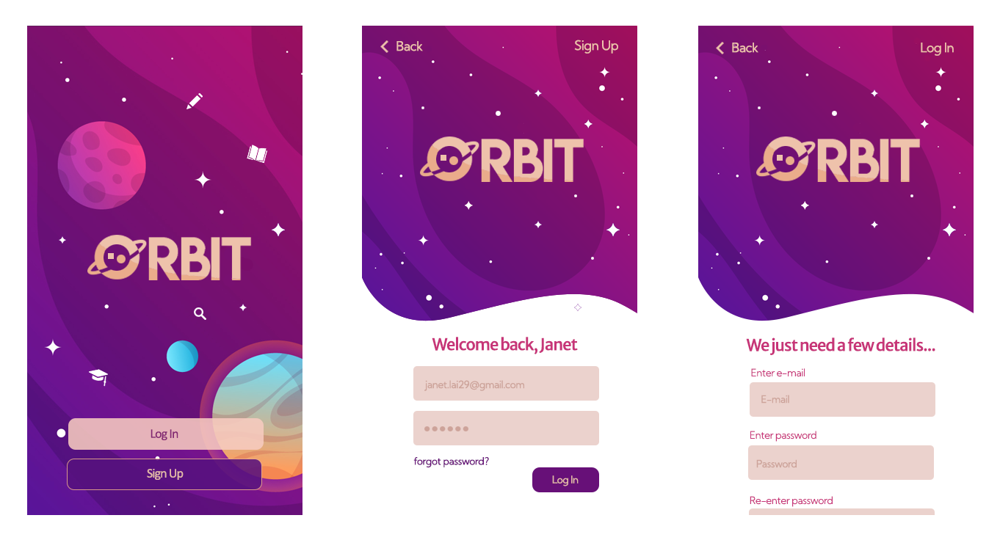

Orbit Subject Selection Project
UI/UX Design
This project was created by a 5 member team at the Digital Society x IBM hackathon in 2020. I was team leader, and so was additionally responsible for ensuring that the project was progressing smoothly and presenting our design.
Challenge Brief
High school students need to decide which subjects to study for their HSC. We were tasked with creating an app that would help students pick their subjects based on what potential career paths and futures they are interested in.
Orbit
We were given little over 24 hours to put together a prototype and present it to the judges panel, which included designers and developers from IBM.
In order to provide personalisation and customisation for each individual user, we decided to make it necessary for users to have an account in order to user the app. Both sign up and login options are offered.
Users can save subjects or career paths that they have an interest in, which can be accessed from the dashboard. The explore page allows users to learn about different subjects, careers, and upcoming events.
From the dashboard, a student can access their progression plan, which showcases which subjects they have currently chosen to take for Year 11 and 12. It displays a list of subjects which students can edit, and the total number of units, and finally a 'future' tab showing both career paths and qualification programs that they could try after high school.
Each career page provides a summary of the job, the relevant school subjects, possible courses or programs that can get you qualified for the job.
Upcoming events are also visible both on the dashboard and more events can be found from the explore page. During our planning stage, the team noticed that just having job descriptions may not be enough to convince a student to pursue a future in a specific area. Making industry or university events more accessible to high school students allows them to gain more insight in a particular area, and to get a taste of what the reality of a job might be. It also provides possible networking opportunities for students.
Following standard mobile app convention, users are able to access and edit the profile and their settings.
To test out the prototype that we presented at the end of the hackathon: click here!